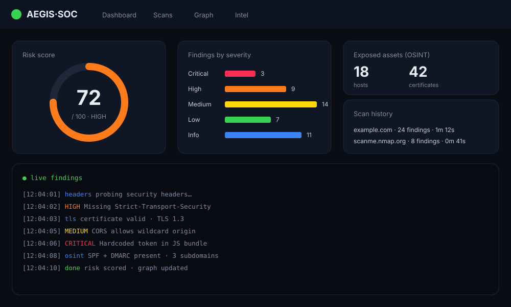
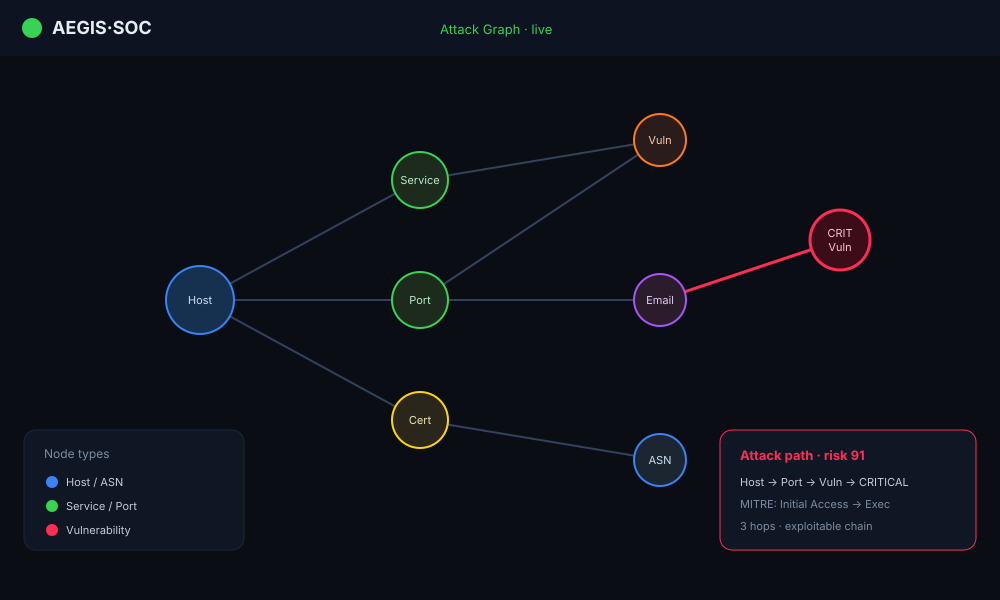

Grafos de ataque en tiempo real, inteligencia OSINT y un dashboard estilo SOC que convierte hallazgos dispersos en rutas priorizadas por riesgo.

⚠️ Herramienta defensiva. Solo para sistemas propios o con autorización escrita. Maquetas sin datos reales.
Los hallazgos de seguridad llegan dispersos y sin contexto. AegisSOC los unifica en un grafo de ataque con rutas y riesgo, en tiempo real.
Rutas y riesgo por nodo, visualización interactiva en vivo.
Descubrimiento de superficie expuesta desde fuentes públicas.
Hallazgos en vivo con severidad codificada por color.
Tácticas mapeadas para priorizar y comunicar.
Hosts, servicios, vulnerabilidades y relaciones, con rutas y puntuación de riesgo.
Superficie expuesta: correos, infraestructura y certificados.
Familias de comprobaciones observacionales. Sin payloads.
Riesgo, severidad, histórico de escaneos y alertas.
Activos expuestos por geolocalización y cadenas de certificados.
Administración, auditoría y solo lectura.
Maquetas representativas · sin datos reales.

Monitorización continua de la superficie de ataque propia.
Evaluación observacional de activos con permiso por escrito.
Entorno seguro para entender grafos de ataque y OSINT.
Descubrir y priorizar activos expuestos.
Aplicación web en tiempo real con backend de servicios, motor de escaneo extensible y visualización de grafos.
Analista (SOC) ↓ Dashboard web (tiempo real) ↓ API + motor de escaneo ↓ Hallazgos + grafo
El detalle de implementación, módulos de escaneo e integraciones se mantiene privado de forma intencionada.